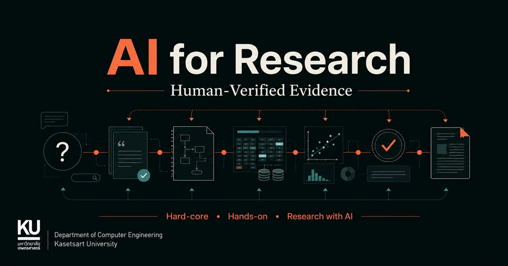

AI for Research: AI เสนอ มนุษย์ตรวจสอบ
{kind=link}

เดิมผมตั้งใจทำ workshop AI for Grad Students หนึ่งวัน เพื่อทดลองว่าเราควรสอนการใช้ AI ช่วยทำวิจัยอย่างไร โดยไม่หยุดอยู่ที่การเขียน prompt หรือทดลองเครื่องมือ แต่เน้นการใช้ AI อย่างมีวิจารณญาณ รับผิดชอบ และตรวจสอบได้
เมื่อเตรียมเนื้อหาจริง ขอบเขตกลับขยายออกเป็นสามวิชา วิชาละ 1 หน่วยกิตหรือ 15 ชั่วโมง ครอบคลุมตั้งแต่วันที่ยังไม่มีโจทย์วิจัย ไปจนถึงวันที่ต้องสื่อสารผลงานต่อสาธารณะ
1. AI for Research Build-up
วิชาแรกเริ่มจากช่วงที่นักวิจัยยังไม่มีโจทย์ชัด หรือมีเพียงความสนใจกว้าง ๆ ผู้เรียนใช้ AI ช่วยสำรวจวรรณกรรม ทำแผนที่แนวคิด เปรียบเทียบคำจำกัดความ หา tension หรือช่องว่าง และพัฒนาเป็น research question ที่ตรวจสอบได้
AI อาจช่วยเสนอความเชื่อมโยงและสมมติฐานได้รวดเร็ว แต่ผู้เรียนต้องย้อนกลับไปอ่านแหล่งจริง ตรวจว่าช่องว่างนั้นมีอยู่จริง ประเมิน novelty และ contribution อย่างไม่กล่าวเกินหลักฐาน แล้วออกแบบงานวิจัยเบื้องต้นให้สอดคล้องกับคำถาม
2. AI for Research Reviews
วิชาที่สองเปลี่ยนบทบาทจากผู้สร้างเป็นผู้ตรวจ ผู้เรียนใช้ AI ช่วยตั้งคำถามกับ citation, logic, methodology, experiment หรือ study design, data analysis และ visualization รวมถึงตรวจว่าข้อสรุปไปไกลกว่าหลักฐานที่มีหรือไม่
เป้าหมายไม่ใช่ให้ AI เป็นกรรมการตัดสินงาน แต่ฝึกให้มนุษย์ตรวจได้เป็นระบบขึ้น AI ทำหน้าที่เสนอจุดเสี่ยง ความไม่สอดคล้อง หรือการตรวจเพิ่มเติม ส่วนผู้วิจัยต้องตัดสินว่าอะไรเป็นข้อผิดพลาดจริง อะไรเป็นข้อจำกัด และอะไรเป็นเพียงข้อเสนอที่ไม่เหมาะกับบริบท
3. AI for Research Publication
วิชาที่สามเริ่มเมื่อมีผลวิจัยแล้ว ครอบคลุมการเลือก journal หรือ venue การตรวจ claim และ citation การสร้าง analysis, table และ visualization ที่ทำซ้ำได้ การปรับ manuscript ตลอดจนการผลิต PDF, poster, slide และการนำเสนอ
การใช้ AI ในช่วงนี้ต้องรักษาความเชื่อมโยงระหว่างข้อมูล วิธีวิเคราะห์ ผลลัพธ์ และถ้อยคำที่เผยแพร่ ทุกตารางและภาพต้องย้อนกลับไปสู่กระบวนการที่ตรวจสอบได้ ทุก citation ต้องมีอยู่จริงและสนับสนุนข้อความนั้นจริง และผู้เขียนต้องรับผิดชอบต่อผลงานฉบับสุดท้ายทั้งหมด
แกนร่วม: Human-Verified Evidence
ทั้งสามวิชามีหลักเดียวกัน:
AI ช่วยเสนอ ช่วยค้น ช่วยตรวจ ช่วยตั้งคำถาม และช่วยให้ทำงานเร็วขึ้นได้ แต่หลักฐาน การตรวจสอบ และการตัดสินใจทางวิชาการยังต้องเป็นของมนุษย์
AI Proposes. Humans Verify. ไม่ได้หมายความว่ามนุษย์เพียงกดรับรองคำตอบท้ายกระบวนการ แต่ต้องออกแบบร่องรอยการทำงานที่ทำให้ตรวจแหล่งที่มา สมมติฐาน การคำนวณ และเหตุผลของการตัดสินใจได้จริง
ความสามารถที่ต้องสร้าง ไม่ใช่เพียงรายการเครื่องมือ
เครื่องมือ AI เปลี่ยนเร็ว หลักสูตรจึงไม่ควรผูกกับชื่อผลิตภัณฑ์เพียงไม่กี่ตัว สิ่งที่ควรติดตัวผู้เรียนคือความสามารถในการตั้งโจทย์ ตรวจข้อกล่าวอ้าง อ่านหลักฐาน ทดสอบทางเลือก บันทึกกระบวนการ ทำงานซ้ำได้ และบอกได้ว่าเมื่อใดไม่ควรเชื่อหรือไม่ควรใช้คำตอบของ AI
นี่ทำให้หลักสูตรใช้ได้กับนักวิจัยหลายสาขา ไม่จำกัดเฉพาะ Computer Engineering หรือคนทำ AI เพราะทุกสาขากำลังเผชิญคำถามเดียวกันว่า AI ช่วยได้ถึงตรงไหน และตรงไหนที่มนุษย์ยังต้องเป็นผู้รับผิดชอบ
Workshop เป็นสนามทดลองก่อนสอนจริง
แนวคิดยังเริ่มจาก workshop หนึ่งวัน ซึ่งจะใช้ทดลองลำดับเนื้อหา กิจกรรม ตัวอย่าง และจุดที่ผู้เรียนต้องการคำแนะนำมากที่สุด ก่อนพัฒนาเป็นสามวิชาเต็มรูปแบบ คนในภาควิชา ต่างภาค ต่างคณะ และในอนาคตอาจรวมถึงคนนอกมหาวิทยาลัย ควรสามารถเข้าถึงการเรียนรู้นี้ได้
Workshop ยังอยู่ระหว่างเตรียมเนื้อหา เวลา และสถานที่ ผู้ที่เคยแสดงความสนใจไว้จึงยังไม่ตกขบวน เป้าหมายยังเหมือนเดิม: สร้างพื้นที่ลงมือทำงานวิจัยกับ AI อย่างจริงจัง แล้วตรวจทุกสิ่งสำคัญด้วยมนุษย์